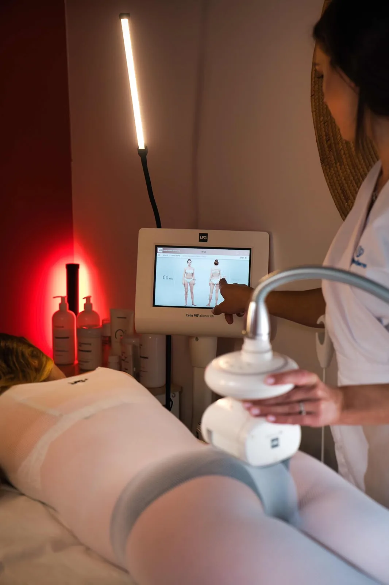
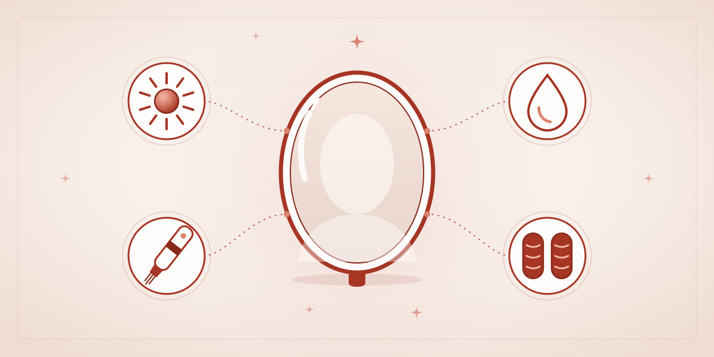

Entre les crèmes miracle et les promesses trop belles, difficile de s'y retrouver. Je préfère être claire : il n'existe pas de solution magique contre la cellulite, mais il existe des moyens d'en améliorer l'aspect. Voici ce qui aide, ce qui ne suffit pas, et ce que je propose à l'institut.
Pas de miracle, mais un aspect de la peau qui peut s'améliorer
Aucun soin ne fait disparaître la cellulite pour de bon, mais certains en améliorent l'aspect : chez LUMIA, une cure de 10 à 12 séances de LPG est souvent recommandée pour un objectif marqué. Le LPG n'est pas un traitement amaigrissant, il agit sur l'aspect de la peau, la fermeté et le drainage.
L'approche qui a du sens se joue en deux temps : des soins mécaniques réguliers, et une hygiène de vie qui les accompagne. Aucun résultat n'est garanti, car chaque peau réagit à son rythme, mais une promesse honnête vaut mieux qu'un slogan.

Réserver mon bilan LPG (nouvel onglet)
La cellulite, de quoi parle-t-on ?
La cellulite est très fréquente chez les femmes. Ce n'est ni une maladie ni un défaut : c'est un aspect de la peau, la fameuse « peau d'orange », qui apparaît lorsque le tissu adipeux situé sous la peau se répartit de façon irrégulière. Les hormones et la circulation y jouent un rôle, ce qui explique qu'elle touche des silhouettes très différentes.
En institut, on parle de cellulite adipeuse, aqueuse ou fibreuse, et il est courant que ces formes se mélangent chez une même personne. C'est l'une des raisons pour lesquelles un bilan personnalisé est utile avant de choisir un protocole.
Parce qu'elle est si courante, il est utile de la dédramatiser. Beaucoup de femmes la vivent comme un complexe alors qu'elle fait partie de la diversité des corps. Vouloir en améliorer l'aspect est légitime, à condition de partir d'attentes réalistes et de ne pas se comparer aux images retouchées.
Ce qui ne marche pas, ou pas seul
Les crèmes, d'abord. Elles peuvent hydrater, adoucir et rendre la peau agréable au toucher, et c'est déjà appréciable, mais utilisées seules, elles ne font pas disparaître la cellulite. Méfiez-vous des promesses de résultat rapide, quelle que soit la marque.
La perte de poids, ensuite. Perdre du poids peut affiner la silhouette, mais cela ne supprime pas toujours la cellulite : certaines personnes minces en ont aussi, et elle peut rester présente après un régime. Se priver n'est donc pas la solution, et ce n'est pas ce que je recommande.
Enfin, la cellulite se travaille dans la durée. Un geste ponctuel ne change pas l'aspect de la peau, c'est la régularité qui compte, que l'on parle de soins, d'activité physique ou de routine du quotidien. Mieux vaut un rythme tenable qu'un programme intense abandonné au bout de trois semaines.
Ce qui aide vraiment
Du côté de l'hygiène de vie, trois leviers simples comptent : une activité physique régulière, qui entretient la circulation et le tonus de la peau, une bonne hydratation, et une alimentation équilibrée. Ils ne font pas de miracle à eux seuls, mais ils créent le terrain sur lequel un soin peut mieux travailler.
Inutile de viser la performance : une activité qui vous plaît, pratiquée dans la durée, vaut mieux qu'un effort spectaculaire sans lendemain. Boire régulièrement dans la journée et composer des repas variés sont des gestes simples, accessibles à toutes, et qui font du bien au-delà de la peau.
Du côté des soins, les techniques mécaniques comme le LPG agissent par un palper-rouler qui stimule la peau en profondeur, pour la lisser, la raffermir et relancer le drainage. Elles ne remplacent pas l'hygiène de vie, elles la complètent. Pour aller plus loin sur le drainage, lisez aussi notre article sur le drainage lymphatique et la cure silhouette.
Le LPG chez LUMIA : à quoi s'attendre
Nous utilisons la technologie Cellu M6 Alliance, non invasive et confortable. Le soin anti-cellulite dure 30 minutes et s'adapte à votre sensibilité. Les séances ont lieu en général une à deux fois par semaine au début, pour enclencher la dynamique, puis on espace pour l'entretien.
Selon votre objectif, on choisit parmi plusieurs protocoles : anti-cellulite, jeune maman, détox avec palper-rouler drainant, ou relaxation. Les soins anti-cellulite, jeune maman et relaxation sont à 60 euros pour 30 minutes, et le soin détox à 70 euros pour 40 minutes.
Tout commence par un bilan à 40 €, offert pour tout achat de forfait, où l'on définit vos objectifs. Des photos de suivi sont prises aux 1re, 6e et 12e séances pour mesurer la progression, et les cures se règlent en plusieurs fois sans frais. Les tarifs détaillés sont sur notre page tarifs.
Pour découvrir la méthode, les protocoles et le déroulement des séances, consultez notre page LPG endermologie à Manosque.
Questions fréquentes
Peut-on faire disparaître la cellulite ?
Aucun soin ne la fait disparaître de façon certaine. On peut en améliorer l'aspect avec des soins mécaniques comme le LPG et une bonne hygiène de vie, sans garantie de résultat.
Les crèmes anti-cellulite suffisent-elles ?
Utilisées seules, elles ne font pas disparaître la cellulite. Elles peuvent hydrater et adoucir la peau, et accompagner utilement un soin.
Le LPG fait-il maigrir ?
Non. Le LPG n'est pas un traitement amaigrissant. Il agit sur l'aspect de la peau, la cellulite, la fermeté et le drainage.
À lire aussi

Microneedling, exosomes et PDRN : le soin à 0,25 mm
Microneedling à Manosque : stylo médical à 0,25 mm, sans injection, actifs aux exosomes et au PDRN, cure de 6 séances. On vous explique le soin pas à pas.

Quel soin du visage choisir selon sa peau ?
Teint terne, taches, rides ou relâchement : quel soin du visage choisir ? LUMINEA, LED, microneedling, COSMELAN ou LPG, notre guide d'orientation à Manosque.

Taches sur le visage : comprendre et atténuer
Mélasma, taches solaires, taches de l'âge : d'où viennent les taches du visage et comment les atténuer durablement, notamment avec le protocole COSMELAN.